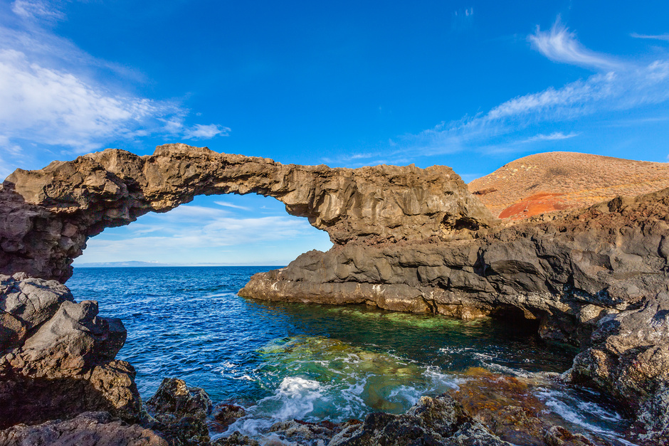

Tectónica de placas:
Esta teoría afirma que la capa más externa de la litosfera (corteza y la zona más externa del manto) estaría constituida por un cierto número de placas rígidas. Estas placas estarían en movimiento, bien por deslizamiento entre ellas o por convergencia, dando lugar a la formación de las Islas.
“Las Placas crecen y se extienden a lo largo de las cordilleras centro-oceánicas. Al estar en movimiento, dos placas pueden chocar entre sí y dar lugar a un fenómeno de subducción. Este fenómeno consiste en que una placa se ve forzada a meterse bajo otra, a lo largo de las fosas y cadenas costeras próximas. Si las placas se deslizan, unas con respecto a otras, se forman grandes sistemas de fallas siguiendo una dirección. La falla de San Andrés en California es parte de tal sistema”.
En una zona de expansión, el flujo continuo de material produce fallas, erupciones volcánicas y corrientes de lavas, originando laderas empinadas (escarpes) y montañas como consecuencia de ese ascenso del magma.
Para algunos, las islas Canarias serían volcanes arrastrados por el suelo oceánico que están o han permanecido activos, sobre una corteza de 100 millones de años.